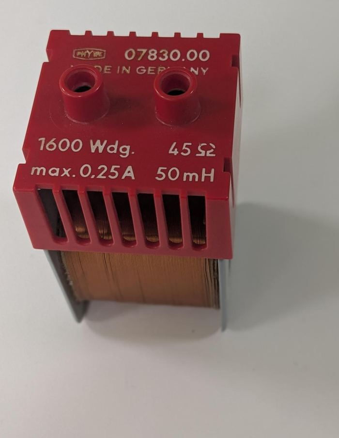
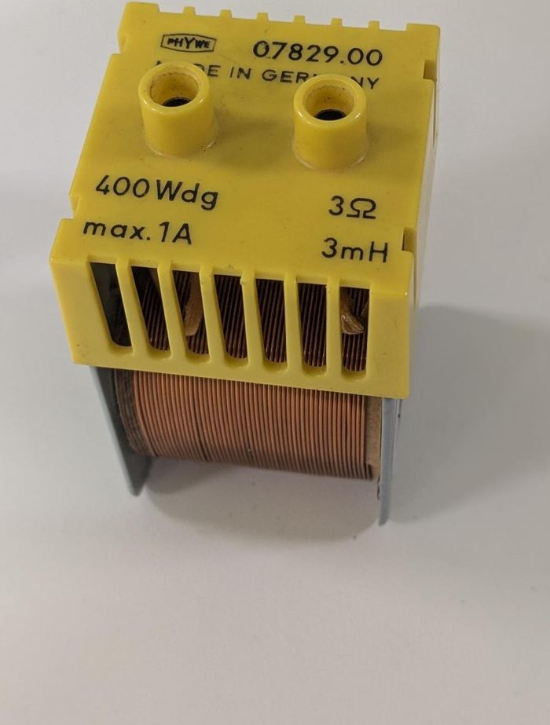
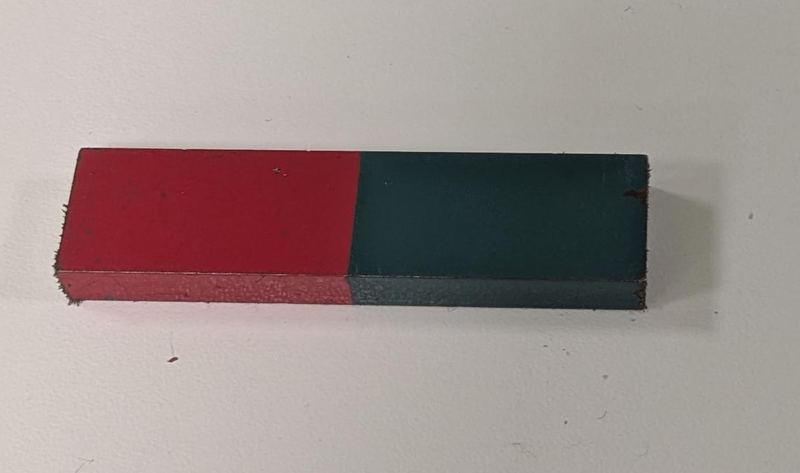
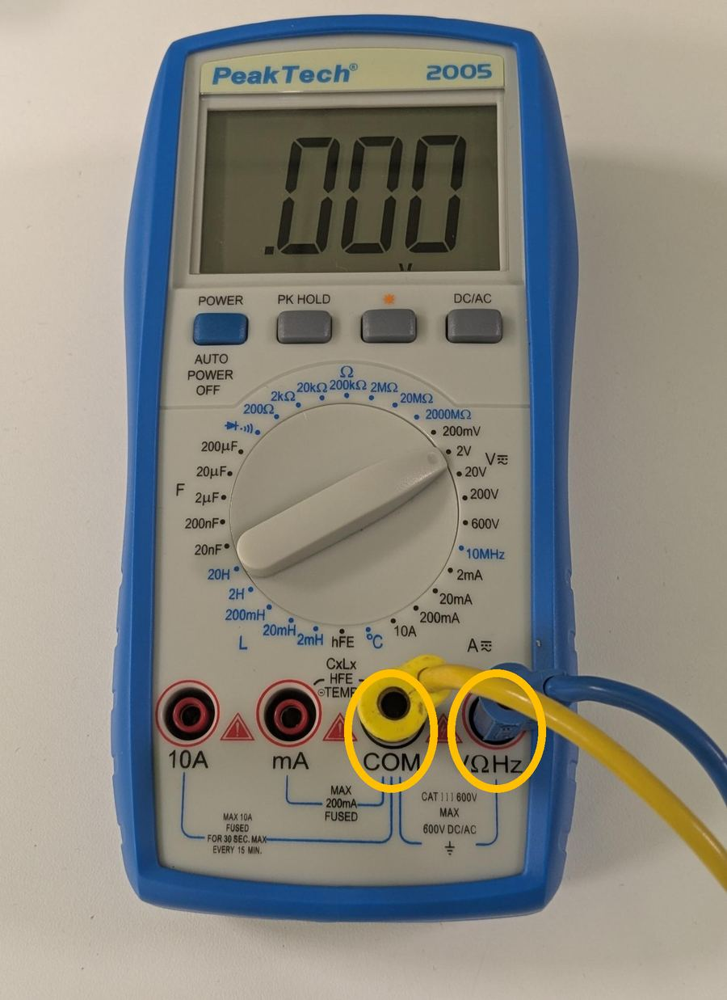
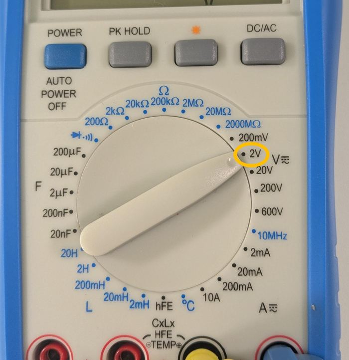

Versuchsanleitung Schritt für Schritt
ForschungsfrageWie kann man die Induktionsspannung vergrößern?
Ihr arbeitet in Gruppen zu 3 – 4. Klickt euch mit Weiter durch und tragt alles in euer AB 2.2, Seite 1 ein.
Verteilt die Rollen:
- Magnet-Profi: bewegt den Magneten
- Ableser/in: beobachtet das Display und sagt den Wert laut
- Protokoll: notiert die Werte im AB – alle übertragen sie am Ende ins eigene AB
Verändert immer nur eine Sache – sonst wisst ihr nicht, woran es lag.
Material holen
Material holen
- vorne am Pult: rote Spule, gelbe Spule, 2 Stabmagnete
- aus dem Schrank / den Kisten: 1 Multimeter, 2 Kabel



AuftragLest die Windungszahl n auf beiden Spulen ab („Wdg.“) und tragt sie ins AB bei „Material“ ein. AB
Multimeter an die Spule anschließen

So geht’s
- Ein Kabel in die Buchse COM stecken.
- Das andere Kabel in die Buchse VΩHz stecken.
- Die freien Enden an die beiden Buchsen der roten Spule stecken.
Die Buchsen 10A und mA bleiben frei – damit misst man die Stromstärke, nicht die Spannung.
Multimeter einschalten und einstellen

So geht’s
- POWER drücken.
- Den Drehschalter auf 2 V stellen – und dort für alle Messungen lassen.
- Im Display darf kein „AC“ stehen. Falls doch: einmal DC/AC drücken.
Das Display zeigt Volt – ins AB kommen Millivolt.
0.045 im Display → 0,045 V = 45 mV
Komma um drei Stellen nach rechts (· 1000).Grundversuch: Was zeigt das Messgerät an?
Ihr arbeitet mit der roten Spule und einem Magneten. Beobachtet bei jedem Schritt: Zeigt das Display eine Zahl ohne Vorzeichen (+), eine Zahl mit Minus (–) oder 0? AB Tabelle A
- Schiebt den Nordpol (rot) zügig in die Spule hinein.Ableser/in: Vorzeichen ansagen!
- Lasst den Magneten in der Spule ruhen.Was zeigt das Display jetzt?
- Zieht den Nordpol zügig aus der Spule heraus.Vergleicht mit Schritt 1.
- Dreht den Magneten um und schiebt den Südpol (grün) in die Spule hinein.Vergleicht wieder mit Schritt 1.
Die Zahl erscheint nur ganz kurz – genau hinschauen. Ein Minus vor der Zahl bedeutet: Die Spannung ist umgepolt.
Was habt ihr in Teil A beobachtet?
Ergänzt danach im AB den Satz „Ergebnis A“. AB
Geschwindigkeit: langsam ↔ schnell
So geht’s
- Rote Spule, ein Magnet.
- Schiebt den Nordpol langsam in die Spule. Lest den größten Wert ab.
- Schiebt den Nordpol schnell in die Spule. Lest den größten Wert ab.
- Jede Messung dreimal – ins AB kommt jeweils der größte Wert.
Tragt jeweils den größten Wert in mV in die Tabelle B–D im AB ein. AB
Windungszahl: rote ↔ gelbe Spule
So geht’s
- Ein Magnet, immer gleich schnell (zügig) hineinschieben.
- Messt mit der roten Spule.
- Steckt die Kabel auf die gelbe Spule um und messt noch einmal.
- Jeweils dreimal messen, den größten Wert ins AB.
Damit der Vergleich fair ist, muss der Magnet bei beiden Spulen gleich schnell bewegt werden. Am besten bewegt immer dieselbe Person den Magneten.
Tragt jeweils den größten Wert in mV in die Tabelle B–D im AB ein. AB
Magnet: 1 Magnet ↔ 2 Magnete
So geht’s
- Wieder die rote Spule.
- Schiebt einen Magneten (Nordpol voraus) zügig in die Spule.
- Legt zwei Magnete genau nebeneinander – rot neben rot (N neben N) – und schiebt beide gleich schnell hinein.
- Jeweils dreimal messen, den größten Wert ins AB.
Passen beide Magnete zusammen nicht in die Spule, bewegt sie zügig direkt an die Öffnung heran – beim Vergleich mit einem Magneten genauso.
Tragt jeweils den größten Wert in mV in die Tabelle B–D im AB ein. AB
Wann war die Spannung größer?
Schaut auf eure Messwerte im AB und beantwortet die Fragen. Füllt dann im AB die Spalte „größer bei …“ aus. AB